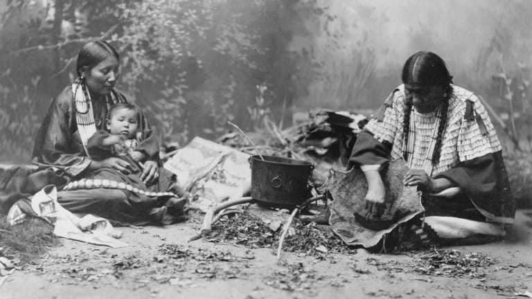

This website provides insight into some of the different exceptional boutique flours from small, independent Canadian mills and what makes them unique.
Over the past few years, many people took up baking as a hobby while being stuck at home. However, few of them know that not all flour is created equal. In Canada, a lot of exceptional boutique flours are produced, and this is often from small, independent mills. Let's talk about the basic flour that most people are familiar with in Canada and then discuss some of the exceptional boutique options from small, independent Canadian flour mills.
Before you go any further, here's some basic primer info about Canadian flour. Fun fact: The Canadian flour is one of the first and greatest Canadian success stories. Despite everything said about various different types of flour in the world, Canadian all-purpose flour magically handles all the different tasks effortlessly whether it's bread, cake, or pastries that are being made. As a Canadian, you probably haven't really heard of other flour types, or at least haven't used or experimented with others. That's actually pretty normal because if someone says "flour" in Canada, they mean all-purpose, especially if they're a home cook or baker. Give it a try, go and check your bag of flour right now - it's probably Canadian all-purpose.
Canadian all-purpose flour is typically composed of 73% carbohydrates, 13% protein, and 14% moisture which includes 1% fats. Some may argue that the protein content is too high for this flour to work for some cake and pastry recipes, but the results always indicate the magic is true. Another interesting fact about this magical all-in-one Canadian flour is that the better flours on British grocery shelves proudly advertise that they are made from Canadian wheat. Whether Canadian all-purpose flour is referred to as magic or not, it's a known fact that Canadian wheat makes the finest flour in the world. As such, it's desired by bakers and cooks around the globe other than just it's versatility. There's even been a "Buy French" movement in the past to try and convince French bread makers in France to switch from Canadian to French flour, but bakers didn't budge.
This group makes an emphasis on their special organic brand of milled flour. Not only do they refrain from the typical chemicals, bleaching, deconstruction, heating, and other highly mechanized processes typical to this part of the food processing industry, they also guarantee freshness by milling flour per order and never stock flour in a warehouse. Flourist's exceptional boutique flour is made using a hand-crafted Austrian stone mill that slowly and gently crushes grain at a low temperature in order to produce a beautiful, aromatic, highly-nutritious, and delicious flour. The organic flour types sold by this group mainly consists of whole grain types that includes the entire grain kernel (germ, bran, and endosperm) so that it maintains all the natural nutrition and flavour of the whole grain. Meanwhile, their sifted flours are made by passing the whole grain versions through fine screens to remove the larger bran and germ particles so that only a beautiful, soft, rich-texture flour remains.
The charm of the flour from Flourist is from their commitment to providing fresh-mille, organic alternatives to the staple grocery store flours. For example, they sell whole grain marquis wheat, einkorn, spelt, red fife, red spring wheat, and rye flour. Besides these, they also sell sifted marquis wheat, red spring wheat, red fife, and spelt. Flourist flours boast a natural colour and unmistakable aroma that make baked goods taste much better compared to when using shelf-stable flours from the grocery store.
Similar to the previous organization, K2 Milling produces organic flour, but they pitch it as "artisanal flour with flavour straight from the field to you." So, different words are used but they have the same idea - they mill "for flavour, not colour" which results in darker flours since they use the natural crop and avoid highly mechanized processes. Through this decision, K2 Milling produces untreated flour with more character and variability. They're focused on using locally sourced seeds so they can ensure that quality flour is produced from quality seeds. In general, they produce a few different types of flour: all-purpose, pastry, bread, whole wheat, ultra fine, stone ground, cake, buckwheat, einkorn, oat flakes, malt barley, wheat malt, malt corn, rey malt, and wheat bran.
What makes K2 Milling especially special is that it also has its own (non-patented) mill and creates unique flours, even by special order if you desire. To go in depth a bit more, the unique design of their "mk2MILL kold mill" claims to retain the flavour of the flour better. Personally, I find this independent Canadian mill more attractive. Well, one simple reason is because K2 Milling is located in Bradford, which is relatively close to the University of Guelph. However, I especially find the unique flours they offer interesting because I'm honestly just curious how good baked products would be using those flours. For instance, some unique "plant protein" flours they can mill from various different granulations use fruits and vegetables like blueberry, hemp, malt barley, wheat bran, flint corn meal, country bread, cranberry, red grape, white grape, kale, broccoli, and lettuce greens. Although some of these seem a bit odd, I'd love to try the fruit flours in some baked goods since it seems like it would be delicious.
In Canada, people have been milling flour since before North America was even discovered. The Indigenous people hand-ground corn and other foods, such as acorns, into flour to make porridge, flat cakes, and more. Eventually, the first European settlers arrived in the 16th century and possessed even greater flour milling technology. If you're interested in learning about the history of flour milling in Canada and a bit about the process of milling, check out The Canadian Encyclopedia: Flour Milling for more info.
